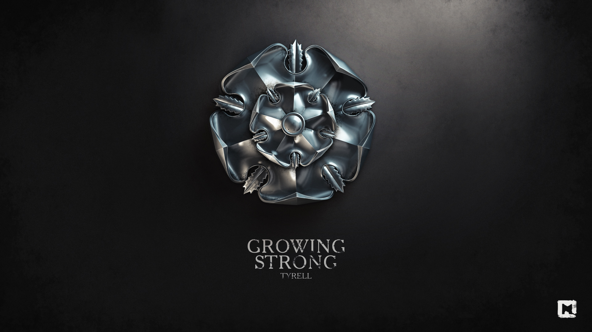

Тиреллы
Тиреллы (ориг. House Tyrell) — вымерший великий дом Вестероса. Они правили Простором — обширными, плодородными и густонаселенными землями на юго-западе континента. Родовой замок Тиреллов — Хайгарден.
История
До событий сериала
Дом Тиреллов был ветвью дома Гарденеров, древних королей Простора. Веками Тиреллы служили стюардами Хайгардена. Постепенно их могущество росло, они становились сильнее и даже скреплялили узы брака с могущественными благородными домами Простора
Во время Завоевательной войны последний король Простора Мерн Гарденер и его сыновья были заживо сожжены драконами Таргариенов в битве, которая получила название Пламенное поле. Стюард Хайгардена Харлен Тирелл добровольно сдал замок Эйгону Таргариену, и в награду за это Тиреллы получили титулы верховных лордов Простора и хранителей Юга, хотя в Просторе были и другие благородные дома с более близкими родственными связями с Гарднерами.
Историю Тиреллов отлично характеризует их герб — за красотой розы прячутся шипы. Тиреллы кажутся честными и справедливыми, на деле они не менее хитры, чем Ланнистеры, и им не чужды дворцовые интриги и политические игры.
В течение многих лет в военных конфликтах Тиреллы всегда присоединялись к тем, кто с наибольшей вероятностью должен выйти из конфликта победителем. Это было и во время завоевания Таргариенов, и во время восстания Роберта. Во время восстания Роберта Тиреллы одержали сокрушительную победу в битве у Эшфорда, а потом осадили Штормовой Предел. Но после смерти Безумного короля они сразу сдались и присягнули на верность Роберту Баратеону.
Известные представители
- Лютор Тирелл, бывший Лорд Хайгардена, Хранитель Юга, Верховный Лорд Простора, Верховный Маршал Простора и глава дома. Умер во время соколиной охоты, упав со скалы и разбившись насмерть вместе с лошадью.
- Оленна Тирелл также известна как Королева Шипов, его вдова. Умерла от яда после осады Хайгардена.
- Мейс Тирелл, их сын, Лорд Хайгардена, Хранитель Юга, Верховный Лорд Простора, Верховный Маршал Простора. Погиб при взрыве Великой септы Бейлора.
- Аллерия Тирелл, урождённая Хайтауэр, жена Мейса Тирелла.
- Маргери Тирелл, дочь Мейса и Аллерии, вдова Ренли Баратеона и Джоффри Баратеона, жена Томмена Баратеона. Погибла при взрыве Великой септы Бейлора.
- Лорас Тирелл также известный как Рыцарь Цветов, сын и наследник Мейса и Аллерии. Погиб при взрыве Великой септы Бейлора.
- Аллана Тирелл, кузина Маргери и Лораса.
Предки
- Алестер Тирелл, основатель дома.
- Харлен Тирелл, стюард Хайгардена при короле Мерне IX Гарденере. Сдал замок после смерти короля, за что Эйгон I Таргариен даровал ему титул Хранителя Юга, а также титул лорда Хайгардена.
- Лионель Тирелл, стюард в Дорне. Погиб в замке Песчаник от укусов сотни красных скорпионов.
Военные силы
Простор — самый плодородный и густонаселенный регион Вестероса, что делает Тиреллов очень богатыми и позволяет содержать огромную армию в 100 000 человек (армия всего Простора). Тиреллы могут созвать и вооружить армию, которая будет почти в два раза больше армии любого другого дома Вестероса. У солдат также отличное обмундирование, почти все солдаты носят доспехи. На данный момент армия дома Тиреллов уничтожена.